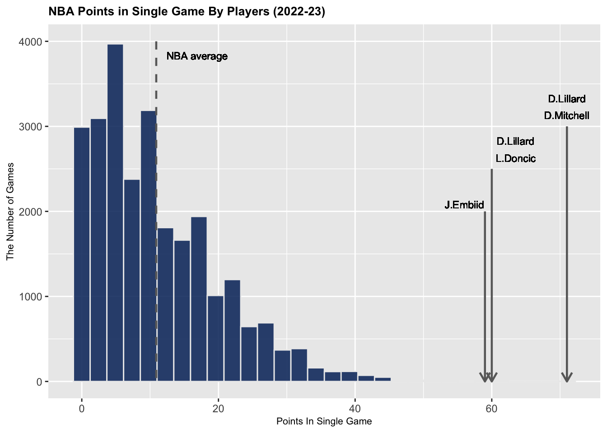

Does Hot Hand exist?
Introduction
The term “hot hand” is a belief originated in basketball that a streak of success temporarily increases the chance of making the next shot. Commentators and fans use such phrases on an athlete who keeps making consecutive shots during the broadcast and also describe that the player is “on fire.” This widespread perception was, however, disproved in 1985 by psychologists Thomas Gilovich, Robert Vallone, and Amos Tversky. Gilovich et al. demonstrated that the phenomenon is, in fact, a cognitive illusion by random sequence. For instance, when a person flips a coin ten times, there is a chance of having eight consecutive heads. Nevertheless, it is difficult to conclude that the previous seven heads increased the chance of getting a final head in the last attempt. Thus, Gilovich et al. provided that there is no sufficient evidence for a correlation between successive shots and the chance of making the next shot. Studies have continued to follow up and revived the hot-hand debate in academia. Kostas Pelechrinis, an associate professor of computing and information at Pitt’s School of Computing and Information, claimed that Hot hand exists and “players can indeed get hot in actual live-game situations.” This project aims to empirically analyze whether the hot hand exists in the latest NBA season (22-23). The data from modern-era basketball provides a large sample size and better quality in terms of specificity relative to the data used in 1985 by Gilovich et al. Thus, this project expects a better outcome and interpretation of hot hand with a modern dataset of shooting records of renowned NBA players. If the hot hand exists, a coach would be able to know which player should shoot in the last minute of the game when the game is tied. Furthermore, this Hot hand is an interesting theory since it does not only apply to basketball. If the hot hand is not valid, a gambler who keeps winning the game at a casino should know that he will be able to lose all his money in his next bet.
Analysis: Identifying the highest points scored in a single Game
Our analysis looks at NBA single-game leaders and records for points during the 2022-23 season, as these NBA players are more likely to make consecutive shots. The code below describes the project sample comprisng the top 5 NBA single-game leaders for points during the 2022-23 season: Damian Lillard (71, 60 points), Donovan Mitchell (71 points), Luka Doncic (60 points) and Joel Embiid (59 points).
kable(gamedata %>% arrange(desc(pts)) %>%
mutate(gameResult=ifelse(outcomeGame=="W","Win","Lose")) %>%
select(dateGame, nameTeam, slugOpponent, namePlayer,pts,gameResult) %>%
head(5))| dateGame | nameTeam | slugOpponent | namePlayer | pts | gameResult |
|---|---|---|---|---|---|
| 2023-01-02 | Cleveland Cavaliers | CHI | Donovan Mitchell | 71 | Win |
| 2023-02-26 | Portland Trail Blazers | HOU | Damian Lillard | 71 | Win |
| 2022-12-27 | Dallas Mavericks | NYK | Luka Doncic | 60 | Win |
| 2023-01-25 | Portland Trail Blazers | UTA | Damian Lillard | 60 | Win |
| 2022-11-13 | Philadelphia 76ers | UTA | Joel Embiid | 59 | Win |
Looking at the histogram below, the scores from four players are very extreme values from right-skewed distribution. Two takeaways from this figure were that 1. it is very rare to score above 50 points, and 2. the four players are phenomenal scorers in the NBA.

Analysis: Player’s preference
Prior to testing the hot hand hypothesis, we analyzed each player’s shot preference. Shot preference indicates where in the court the player prefers to shoot. Many studies have been related to shot locations with the hot hand. Lantis et al. state that “difference in shot location from the previous shot also grows in magnitude for longer streaks of success.” We can also make further claims with the result of a hot hand and shot preferences. For instance, if a player is likely to shoot near the post and is identified to have a hot hand, we can also further investigate more players who tend to shoot from similar locations.
Here is the shot position data for 4 players:

Using the heatmap, we classified the player’s preferred shot locations. For Damian Lillard, the 3-point line and the area under the basket was the most frequent zone for him to shoot. While Donovan Mitchell had a similar pattern with Lillard, on the contrary, Joel Embiid mainly shot from the basket area. Luka Doncic also attempted his shots in the paint area and behind the arc but seemed to have a tendency in the left midrange as well, with the heat stretching more from the basket.
Besides the shot preference, shot types are relevant to the hot hand and can also be a proxy variable for shot difficulty (Bocskocsky et al., 2014). There are various types of shots in basketball: Driving lay-ups, pull-up jump shots, step-back jump shots, etc. We analyzed the most frequent types of shots attempted by each player.
As a result, Damian Lillard and Donovan Mitchell had the same pattern by having the same four types of shots as their most frequent shot types: Pull-up jump shot, jump shot, driving lay-up, and step-back jump shots. On the other hand, Luka Doncic tends to shoot more step-back jump shots and driving-floating jump shots, while Joel Embiid’s shots mostly consist of jump shots, pull-up jump shots, driving lay-up, and fade-away jump shots.
Analysis: Streaks and subsequent shot attempt
To roughly see how the consecutive shooting streaks impact the next shot, we calculated the probability of making the next shot based on the previous shooting streak. The fluctuation of the line plot will not prove the existence of the hot hand. However, if the hot hand exists, we expect the players to have an increase in their field goal percentage compared to the as they keep making the shots successively.
The result from the last plot does not illustrate sufficient evidence to conclude that hot hands exist during the game of basketball. However, it gives reasonable and valid evidence to dive into a deeper analysis of the selected players.
The player who seemed to have a significant increase in slope was Donovan Mitchell. Doncic also had a similar pattern with moderate increase but slightly decreased during the 4 and 5 streak span. Embiid had an incline of the increase until five consecutive field goals but finished with a roughly horizontal slope. On the other hand, Damian Lillard only had the increase until three and also went through a decrease after five streaks.
Modeling: Variables
To test the hypothesis of Hot Hand, we built a model that can represent the original definition of Hot Hand. For this model, we used the variables below:
Response Variable: whether the player made a shot or not.
the previous streak of success before attempting the current shot.
Last 4 shot percentage of a player.
The entire shot percentage before taking a new shot.
As the definition of a Hot Hand is previous successive shots increasing the chance of making the current shot, we created the isShotMadeBinary, indicating whether the player made the attempted shot for our response variable. The code below converts true or false values from isShotMade to 1s and 0s. Then, by using the isShotMadeBinary, we cumulated the successive field goals made as a streak, which is the most crucial term in the definition.
The reason why we used the last 4 field goal attempts were because the 1st quantile of players in the league take 4 shots during the entire game. At the same time, players generally need to take at least 4 shots to heat up and eventually have a Hot Hand.
While the contemporary era enables us to measure new types of variables, we also included modern features that could indicate information about a player’s shot. The predictors used in the full model are listed below:
the previous streak of success before attempting the current shot.
Last four shot percentage of a player
The entire shot percentage before taking a new shot.
Distance of a shot
Name of a zone on the court
Type of a shot
The exact location of a shot
# Formula for each model
form_def <- as.formula(as.factor(isShotMadeBinary) ~ streaks+lastFour+lastPercentage)
form_full <- as.formula(as.factor(isShotMadeBinary) ~ typeAction+zoneBasic+locationX+locationY+streaks+lastFour+lastPercentage+distanceShot)We used Logistic Regression and Random Forest machine learning algorithms for each model. Thus, as there are four player datasets, we had 16 results at the end.
Model Inference
Variable importance
One of the advantages of Random Forest algorithms is that we can visualize the importance of variables used in the model when predicting the response variable. For all four players, the five most important variables when forecasting were the X and Y coordinates of a location, last percentage, shot distance, and the type of shot. Except for the previous percentage, the other four variables are more related to where the player is shooting. For example, types of shots such as dunk or layup shots are attempts that can only be performed near the basket and can not be from behind the 3-point arc.

Logistic Regression summary
For inference in Logistic Regression, we had to eliminate the two categorical values from the full model due to a multicollinearity. The final variables below all had the VIFs lower than 10.
# VIF
model<-(lm(isShotMadeBinary ~ locationX+locationY+streaks+lastFour+lastPercentage+distanceShot, lillard_shots3))
vif(model) locationX locationY streaks lastFour lastPercentage
1.010668 6.365743 1.641844 2.492604 1.823214
distanceShot
6.349815 From the summary results, all four variables used in the definition had high p-values. However, distanceShot variable was statistically significant for all four players. Note that as the coefficient is negative, we recognized that as a player shoots further to the basket, the player is likely to miss the shot, i.e., if a player gets closer shot, the player will have a higher chance of making the shot.
# Logistic Regression Model
logistic_model <- function(data){
glm(as.factor(isShotMadeBinary) ~ locationX+locationY+streaks+lastFour+lastPercentage+distanceShot, data = data, family = "binomial")
}
# Summary for each player
summary(logistic_model(lillard_shots3))
Call:
glm(formula = as.factor(isShotMadeBinary) ~ locationX + locationY +
streaks + lastFour + lastPercentage + distanceShot, family = "binomial",
data = data)
Coefficients:
Estimate Std. Error z value Pr(>|z|)
(Intercept) 0.3906694 0.2222124 1.758 0.07873 .
locationX 0.0003836 0.0005689 0.674 0.50010
locationY 0.0004659 0.0014557 0.320 0.74891
streaks -0.1188696 0.0787220 -1.510 0.13105
lastFour -0.1838814 0.4493041 -0.409 0.68235
lastPercentage 0.8521132 0.5698028 1.495 0.13480
distanceShot -0.0446039 0.0137644 -3.241 0.00119 **
---
Signif. codes: 0 '***' 0.001 '**' 0.01 '*' 0.05 '.' 0.1 ' ' 1
(Dispersion parameter for binomial family taken to be 1)
Null deviance: 1341.9 on 969 degrees of freedom
Residual deviance: 1277.7 on 963 degrees of freedom
AIC: 1291.7
Number of Fisher Scoring iterations: 4summary(logistic_model(doncic_shots3))
Call:
glm(formula = as.factor(isShotMadeBinary) ~ locationX + locationY +
streaks + lastFour + lastPercentage + distanceShot, family = "binomial",
data = data)
Coefficients:
Estimate Std. Error z value Pr(>|z|)
(Intercept) 0.8792303 0.2375265 3.702 0.000214 ***
locationX -0.0007423 0.0006962 -1.066 0.286304
locationY 0.0031469 0.0017271 1.822 0.068453 .
streaks -0.0114175 0.0618228 -0.185 0.853479
lastFour 0.0344512 0.3904303 0.088 0.929687
lastPercentage -0.0012444 0.5218119 -0.002 0.998097
distanceShot -0.0895991 0.0167057 -5.363 8.17e-08 ***
---
Signif. codes: 0 '***' 0.001 '**' 0.01 '*' 0.05 '.' 0.1 ' ' 1
(Dispersion parameter for binomial family taken to be 1)
Null deviance: 1645.4 on 1186 degrees of freedom
Residual deviance: 1527.9 on 1180 degrees of freedom
AIC: 1541.9
Number of Fisher Scoring iterations: 4summary(logistic_model(mitchell_shots3))
Call:
glm(formula = as.factor(isShotMadeBinary) ~ locationX + locationY +
streaks + lastFour + lastPercentage + distanceShot, family = "binomial",
data = data)
Coefficients:
Estimate Std. Error z value Pr(>|z|)
(Intercept) 0.5934009 0.2182891 2.718 0.00656 **
locationX -0.0005487 0.0006001 -0.914 0.36059
locationY 0.0016517 0.0016048 1.029 0.30336
streaks 0.0110233 0.0638392 0.173 0.86291
lastFour 0.1658182 0.3861545 0.429 0.66763
lastPercentage 0.0022137 0.4770658 0.005 0.99630
distanceShot -0.0630206 0.0148235 -4.251 2.12e-05 ***
---
Signif. codes: 0 '***' 0.001 '**' 0.01 '*' 0.05 '.' 0.1 ' ' 1
(Dispersion parameter for binomial family taken to be 1)
Null deviance: 1564.8 on 1129 degrees of freedom
Residual deviance: 1489.8 on 1123 degrees of freedom
AIC: 1503.8
Number of Fisher Scoring iterations: 4summary(logistic_model(embiid_shots3))
Call:
glm(formula = as.factor(isShotMadeBinary) ~ locationX + locationY +
streaks + lastFour + lastPercentage + distanceShot, family = "binomial",
data = data)
Coefficients:
Estimate Std. Error z value Pr(>|z|)
(Intercept) 1.1190077 0.2733987 4.093 4.26e-05 ***
locationX 0.0003527 0.0009664 0.365 0.715
locationY 0.0042144 0.0022926 1.838 0.066 .
streaks 0.0632635 0.0541367 1.169 0.243
lastFour -0.3654828 0.4274932 -0.855 0.393
lastPercentage -0.0846816 0.5642019 -0.150 0.881
distanceShot -0.1051392 0.0222175 -4.732 2.22e-06 ***
---
Signif. codes: 0 '***' 0.001 '**' 0.01 '*' 0.05 '.' 0.1 ' ' 1
(Dispersion parameter for binomial family taken to be 1)
Null deviance: 1466.7 on 1063 degrees of freedom
Residual deviance: 1370.8 on 1057 degrees of freedom
AIC: 1384.8
Number of Fisher Scoring iterations: 4Some people might claim that it could be difficult to score if you go closer to the basket, as there is more defense concentrated near the post. However, if a player is on a cold streak and want to find the rhythm to heat up for Hot Hand, shooting closer or driving and penetrating the defense could be a good shooting scheme during the game.
Discussion
Overall, we found evidence that Hot Hand may be an illusion based on the data. It turned out that the distance and location were statistically significant for both predicting and inference perspectives. Then, if a player seems to be having a Hot Hand, this might be due to the distance and not the streak of success.
Therefore, it could be better for gamblers to stop before the next round if they have won consecutive matches at a casino. In basketball terms, it could not be a great idea for a coach to only consider a hot-hand player to shoot the last shot when the game is tied in the final seconds.
However, Hot hand is a complicated concept. While many statisticians have been claiming that the hot hand is a fallacy, the hot hand is not completely under a statistic domain. Shooting in a streak involves various factors, such as muscle memory and psychological factors, that have not yet been measured during the basketball game. Therefore, further studies should be made based on a number of different factors that could newly conceptualize the features when a player is making a shot attempt, as well as utilizing cutting-edge methodologies.
Reference
- Bocskocsky, A., Ezekowitz, J., & Stein, C. (2014). Heat check: New evidence on the hot hand in basketball. Retrieved from https://papers.ssrn.com/sol3/papers.cfm?abstract_id=2481494
- Gilovich, T., Vallone, R., & Tversky, A. (1985). The hot hand in basketball: On the misperception of random sequences. Cognitive Psychology, 17(3), 295–314. doi:https://doi.org/10.1016/0010-0285(85)90010-6
- Lantis, R., & Nesson, E. (2021). Hot shots: An analysis of the “Hot hand” in NBA field goal and free throw shooting. Journal of Sports Economics, 22(6), 639–677. doi:10.1177/15270025211006889
- Pelechrinis, K., & Winston, W. (2022). The hot hand in the wild. PLOS ONE, 17(1). doi:10.1371/journal.pone.0261890
- Sauer, R. D., & Brown, W. O. (1993). Does the Basketball Market Believe in the Hot Hand? Comment. The American Economic Review, 83(5), 1377–1386. doi:http://www.jstor.org/stable/2117569.
This project was completed during my master’s degree program. While the original project included components like Machine Learning predictions, I had to exclude a certain amount due to the substantial volume of content.